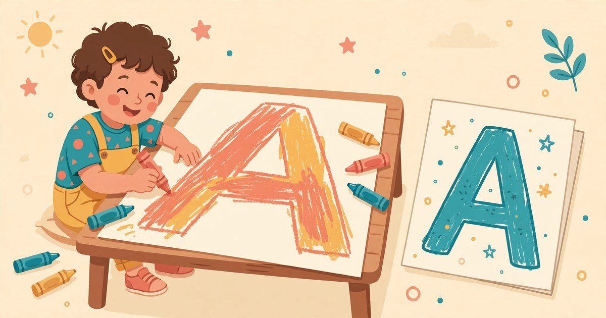

Benefits of Coloring for Preschoolers

Coloring looks simple. A child, some crayons, a page. But a lot is happening while a child colors — small muscles are working, attention is growing, and new words are being learned. Here are seven real benefits of coloring for preschoolers, and how to make the most of coloring time at home.
1. Fine motor skills — small hands get stronger
Grip, control, and hand strength
Coloring is one of the best ways for a young child to build the small muscles in their hands, fingers, and wrists. Holding a crayon builds grip strength. Staying inside a shape takes careful, controlled movement. Pressing lightly or firmly teaches pressure control. These are the same muscles a child will use later for writing, buttoning a coat, and using a spoon and fork. Occupational therapists call these fine motor skills, and coloring is one of the most enjoyable ways to practice them — far more fun than any exercise, and far easier to fit into a normal day.
From fist grip to tripod grip
A fist grip is completely normal for children under 5. They hold the crayon in their whole hand and move from the shoulder, and that is exactly as it should be. Around ages 5 to 6, most children move toward the tripod grip — thumb and two fingers — which is the grip used for writing. Coloring gives them gentle, daily practice for that change, without any teaching at all. You do not need to correct a young child's grip. Just give them chunky crayons, big shapes, and time.
- Ages 2–3: big crayons and simple shapes with lots of space to fill.
- Ages 4–5: smaller areas and more detailed pages as their control improves.
- Try coloring on a vertical surface — an easel, or paper taped to a wall — which helps build wrist strength and a better grip.
2. Focus and patience — finishing a page teaches sticking with a task
A coloring page has a clear beginning and a clear end. That makes it one of the first tasks a young child can truly finish — and finishing something feels good. Coloring also asks a child to keep going when the picture is only half done, which is the beginning of patience. It is not about sitting still for an hour. Ten to 20 minutes is plenty for a preschooler. Stop while it is still fun, and they will ask to color again tomorrow. Over weeks and months, those short sessions add up to a child who can concentrate for longer and longer stretches.
If your child leaves a page half finished, that is fine too. Let them come back to it later, or start a fresh one. The goal is a happy habit, not a finished gallery.
3. Color and shape recognition
Every coloring page is a quiet lesson in colors and shapes. 'The lion is yellow. The sun is round. The apple is red and the leaf is green.' Naming colors and shapes out loud while coloring builds vocabulary at the same time as it builds knowledge — the child learns the word and the idea together.
- Ask your child to find every circle on the page, then color them all one color.
- Count the shapes together before coloring starts — how many stars, how many triangles?
- Let your child choose the colors. There is no wrong color for a lion, and choosing builds confidence.
4. Creativity and self-expression
There are no rules in coloring except the ones a child invents. A purple lion, a blue sun, a striped elephant — every choice is theirs, and they see the result right away. That freedom is why coloring builds confidence: the child makes something that did not exist before, and it is theirs alone. Display finished pages on the fridge or the wall. It tells your child their work matters, and it gives them a reason to start the next page.
5. Language — talking about the picture builds vocabulary
Coloring gives a child something to talk about, and talking is how vocabulary grows. 'Tell me about your picture' builds far more language than 'What color is that?' Ask open questions: What is the lion doing? Where does the firefighter work? Who lives in this house? A short conversation after coloring is worth as much as the coloring itself — it turns a quiet activity into a language activity, and it shows your child that their ideas are worth listening to.
- Ask your child to tell a one-sentence story about their picture.
- Name the things in the picture together before coloring starts.
- Read the picture's words aloud — letter names, animal names, helper names.
6. Calm, screen-free time
Coloring is one of the simplest calm activities that needs no screen. It gives children a quiet, focused thing to do — and it gives parents a break from the tablet. The American Academy of Pediatrics recommends that children ages 2 to 5 have about 1 hour a day or less of high-quality programming, watched together with an adult. In its January 2026 policy, the Academy added that what matters most is the child, the content, and whether screens are crowding out sleep, play, and face-to-face time — its 5 Cs are Child, Content, Calm, Crowding Out, and Communication. The World Health Organization gives the same 1-hour guidance for ages 2 to 4, and adds that less is better. Coloring is one of the easiest replacements for that hour: it is calm, it is creative, and it needs nothing but crayons and paper.
Try it at the times when screens usually win — the wait before dinner, a rainy afternoon, the last hour before bed. Keep a small box of crayons and pages ready, so coloring is as easy to reach for as the tablet.
7. How to make the most of coloring time
- Keep sessions short — 5 to 10 minutes for toddlers, 10 to 20 for preschoolers.
- Sit with them sometimes and color your own page next to theirs.
- Praise effort, not perfection: 'You worked hard on that lion' beats 'That's perfect.'
- Keep crayons and paper easy to reach, so coloring becomes a habit instead of a special event.
- Rotate the pages — a new picture keeps the activity fresh. If your child loves letters, try coloring one letter a day from My First ABC Book — A is for Apple, B is for Ball.
- Color the lion in My First Animal Explorer after reading an animal fact together.
Try it yourself
Start with our free sample — four activities from our four books, no sign-up needed.
Frequently asked questions
At what age should my child start coloring?
Children usually start scribbling around 18 months and can enjoy simple shapes from age 2. Staying inside the lines develops gradually from ages 4 to 5 — and a fist grip is completely normal before then.
Is coloring actually good for my child's development?
Yes. Coloring builds fine motor skills and hand strength, hand-eye coordination, focus, color and shape recognition, creativity, and language. The sources below explain the guidance behind each claim.
How long should a coloring session last?
Five to 10 minutes is plenty for a toddler, and 10 to 20 minutes for a preschooler. Stop while it is still fun — short, happy sessions build a habit that lasts.
Sources
- American Academy of Pediatrics, Council on Communications and Media (2026). Digital ecosystems, children, and adolescents. Pediatrics, 157(2), e2025075320.
- World Health Organization (2019). Guidelines on physical activity, sedentary behaviour and sleep for children under 5 years of age.
- NEO Kids & Family, Health Sciences North (Children's Treatment Centre). Early coloring skills handout for toddlers to 5 years old — guidance on hand strength, grip, and eye-hand coordination.
- NHS children's health services (Bedfordshire, Luton and Milton Keynes; Cambridgeshire and Peterborough). Getting ready to write — mark making, grip stages from palmar grasp to tripod grip, and vertical-surface coloring.